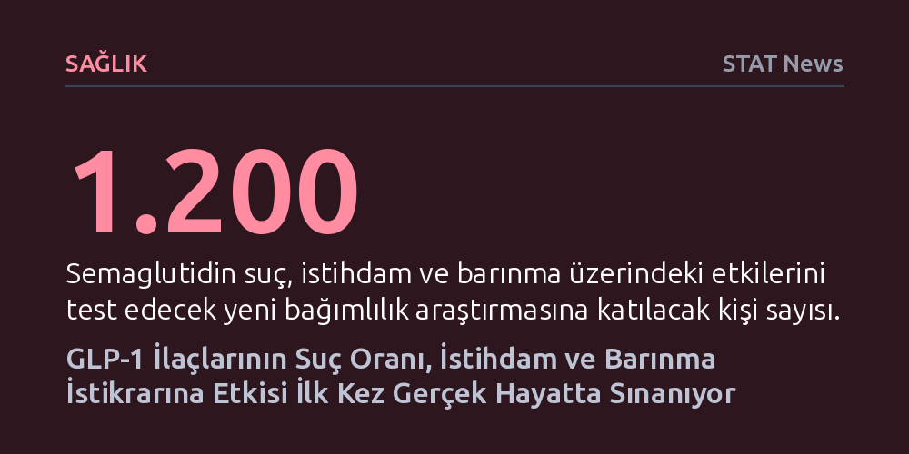

SAGLIK · STAT News · 2026-10-15
Yeni bir klinik araştırma, semaglutidin bağımlılık tedavisinin ötesinde suç oranlarını azaltma, istihdamı artırma ve barınmayı koruma gücünü 1.200 kişi üzerinde sınıyor. Müspet sonuçlar, GLP-1 grubu ilaçlara kamu bütçesinden doğrudan kaynak aktarılmasının önünü açabilir.
Obezite ve diyabet için geliştirilen GLP-1 ilaçlarının, biyolojik bir metabolizma tedavisinden çıkıp suç oranlarını ve yoksulluğu azaltabilecek kapsamlı bir sosyal politika aracına dönüşebileceğini gösteriyor.

Son yıllarda obezite ve diyabet tedavisinde çığır açan GLP-1 grubu ilaçlar (özellikle semaglutid), yalnızca kilo verdirmekle kalmayıp bağımlılık mekanizmalarını da baskılayabileceğine dair güçlü sinyaller veriyor. Klinik deneyler, bu ilaçların alkol ve uyuşturucu gibi madde kullanım bozukluklarını yatıştırma potansiyelini halihazırda gösterdi. Ancak tıp dünyası şimdi çok daha cesur ve alışılmışın dışında bir hipotezi test etmeye hazırlanıyor: Metabolizmayı düzenleyen bir enjeksiyon, bireylerin suç işleme oranını düşürüp toplumsal hayata tutunmalarını sağlayabilir mi?
Yeni duyurulan geniş kapsamlı bir klinik çalışma, haftalık semaglutid enjeksiyonlarının gerçek hayattaki sosyal sonuçlarını doğrudan mercek altına alacak. Araştırma; bireylerin ceza adaleti sistemiyle temaslarını (tutuklanma veya mükerrer suç oranlarını), düzenli bir işte çalışma sürelerini, barınma istikrarlarını ve sağlık hizmetlerinden ne sıklıkla yararlandıklarını takip edecek. Böylece bir biyolojik ilacın, sadece fizyolojik semptomları değil, bir insanın sosyoekonomik yazgısını ve adli sicilini ne ölçüde iyileştirebileceği ilk defa bu denli kapsamlı biçimde ölçülecek.
Bu çalışma, bağımlılık tedavisinde radikal bir paradigma değişimine işaret ediyor. Eğer semaglutid kullanımı ile adli sicil ve sosyal güvence arasında anlamlı bir pozitif bağ tespit edilirse, elde edilecek veriler kamu otoritelerinin bu pahalı ilaçları sübvanse etmesi için en güçlü ekonomik ve hukuki gerekçe haline gelecek. Kısacası tıbbi bir molekül, cezaevlerinin yükünü hafifleten ve sokaktaki güvenliği artıran bir kamu yatırımı olarak konumlandırılabilecek.
Önümüzdeki dönemin en dikkat çekici saha araştırmalarından biri olacak bu çalışma, kâr amacı gütmeyen Bağımlılık Bilimi, Politikası ve Araştırmaları Merkezi ile Pensilvanya eyaletine bağlı Allegheny İlçesi İnsani Hizmetler Departmanı ortaklığında hayata geçiriliyor. 2027 yılının başlarında başlatılması planlanan deney, alkol kullanım bozukluğu, opioid kullanım bozukluğu ya da her ikisinden birden muzdarip olan 1.200'e yakın katılımcıyı kapsayacak.
Araştırmayı klasik klinik çalışmalardan ayıran en temel unsur, veri toplama metodolojisi. Bilim insanları yalnızca katılımcıların beyanlarına veya laboratuvar testlerine güvenmek yerine, ilçenin entegre idari veri tabanını kullanacak. Katılımcıların emniyet ve mahkeme kayıtları, sosyal yardım başvuruları, istihdam dökümleri ve acil servis ziyaretleri bu ortak veri ağı üzerinden kesintisiz izlenecek. Bu sayede ilacın bireyin gündelik ve yasal yaşamındaki gerçek karşılığı tarafsız ve somut kanıtlarla belgelenecek.
Tıp dünyasında bir yandan biyokimyasal devrimler yaşanırken, diğer yandan klinik uygulamalara hızla giren yapay zekânın nasıl denetleneceği konusunda büyük bir nüfuz mücadelesi veriliyor. Eyalet Tıp Kurulları Federasyonu (FSMB), tıp pratiğinde yapay zekânın sınırlarını ve kılavuz ilkelerini belirlemek üzere 22 üyeden oluşan kritik bir çalışma grubu kurdu. Heyette Amerikan Tabipler Birliği (AMA), Amerikan Hastaneler Birliği, yapay zekâ devi Anthropic ve dev sigorta şirketi Elevance Health'in üst düzey yöneticileri yer alıyor.
Ancak düzenleme yarışında söz sahibi olmak isteyen tek taraf geleneksel sağlık kurumları değil. Palantir'in kurucu ortaklarından Joe Lonsdale tarafından finanse edilen muhafazakâr politika grubu Cicero Institute, yapay zekâ ürünlerine doğrudan lisans verilmesinin önünü açan alternatif bir model yasa tasarısı hazırladı. Eyalet meclisleri halihazırda yapay zekânın sağlıkta kullanımını kimi yerde katı şekilde kısıtlayan kimi yerde ise serbest bırakan yamalı bir mevzuat ağı örerken, federasyonun çalışması ulusal standartların çerçevesini belirlemeyi hedefliyor.
Doğum öncesi gebelik sürecinden bebeğin ikinci yaş gününe kadar uzanan dönem, nörolojik gelişim açısından insan hayatının en kritik evresi kabul ediliyor. Genetik miras, uyku kalitesi ve ebeveynle kurulan ilk temasların beyin plastisitesi üzerindeki belirleyiciliği uzun süredir bilinse de, yeni bilimsel yaklaşımlar bağırsak mikrobiyotasını bu denklemin merkezine yerleştiriyor. Bağırsaktaki trilyonlarca mikroorganizmanın ürettiği sinyaller, gelişmekte olan beynin hücresel mimarisini doğrudan şekillendiriyor.
Wellcome Leap bünyesindeki FORM araştırma programında çalışan bilim insanları, modern yaşamın bebek mikrobiyotası üzerinde biriktirdiği baskıları inceliyor. Sezaryen doğumlar, erken yaşta antibiyotik kullanımı ve anne sütü yerine formül mamayla beslenme gibi değişkenlerin bağırsak florasını nasıl değiştirdiği ve bu baskıların günümüzde artış gösteren nörogelişimsel farklılıklara yol açıp açmadığı araştırılıyor. Bağırsak-beyin eksenindeki bu dinamiklerin çözülmesi, gelişimsel geriliklerin çok erken dönemde önlenmesine kapı aralayabilir.
Sağlık ve bilim camiası, modern dönemin en etkili bulaşıcı hastalıklar muhabirlerinden Helen Branswell’in 69 yaşında kanser komplikasyonları nedeniyle hayatını kaybetmesinin yasını tutuyor. Branswell; Covid-19, H5N1 kuş gribi, Ebola, kızamık ve hantavirüs gibi küresel tehditlerin dünyadaki kamuoyu ve bilim insanları tarafından doğru anlaşılmasında kilit rol oynamış, titiz haberciliğiyle sayısız ödül kazanmış bir isimdi.
Yerel sağlık görevlilerinden küresel halk sağlığı liderlerine kadar geniş bir kesimin saygısını kazanan Branswell, bilimi anlaşılır kılmayı mesleki bir tutku olarak gördü. Kız kardeşi Brenda’nın ifadesiyle, "İşini bir hediye olarak görüyordu" ve insanlara sessizce iyilik yapmayı ilke edinmişti. Branswell’in ardından bırakılan bu miras, kriz anlarında bağımsız ve tavizsiz bilim haberciliğinin toplum sağlığı için en az aşılar kadar hayati bir savunma kalkanı olduğunu bir kez daha hatırlatıyor.